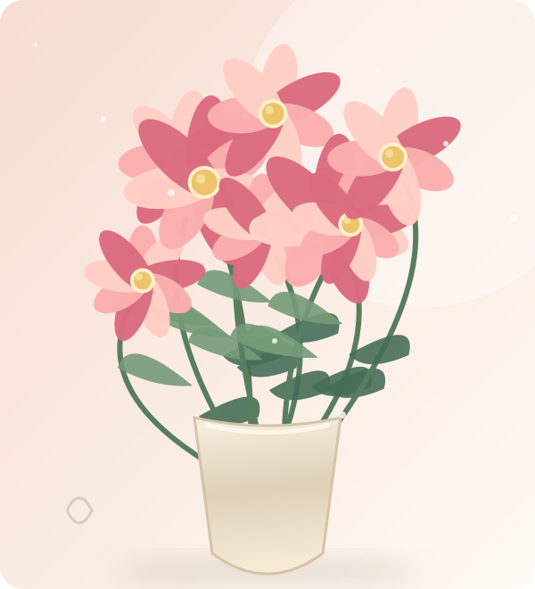
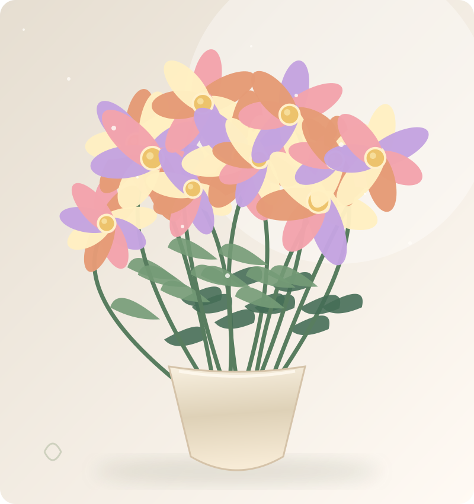
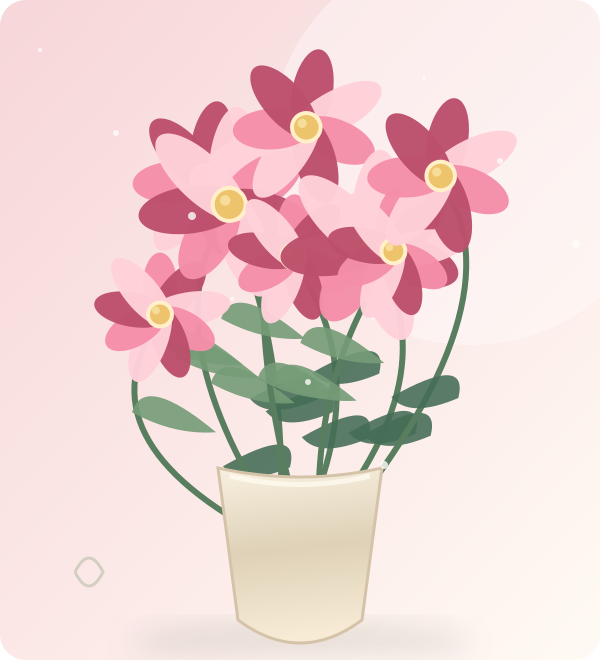
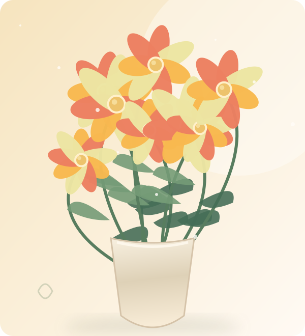
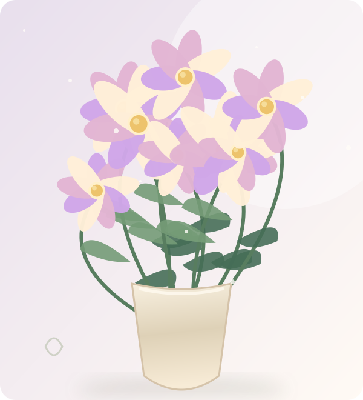
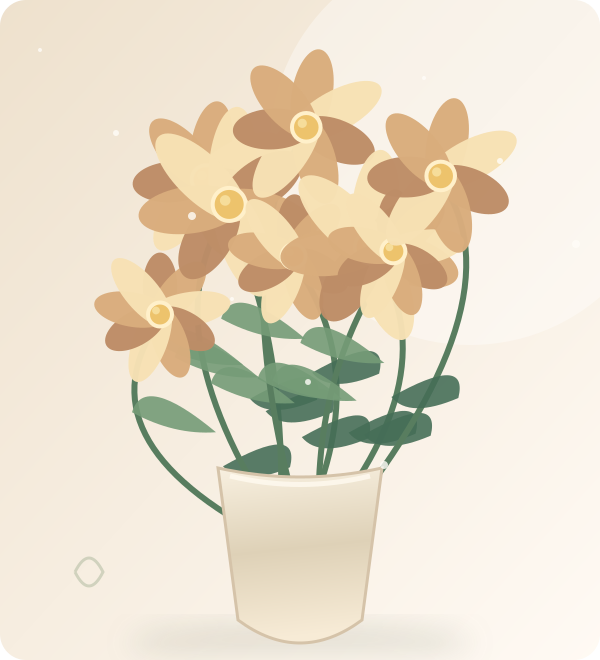
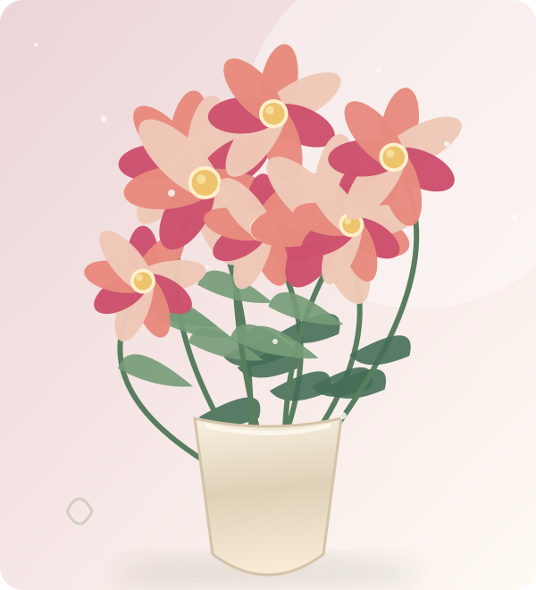
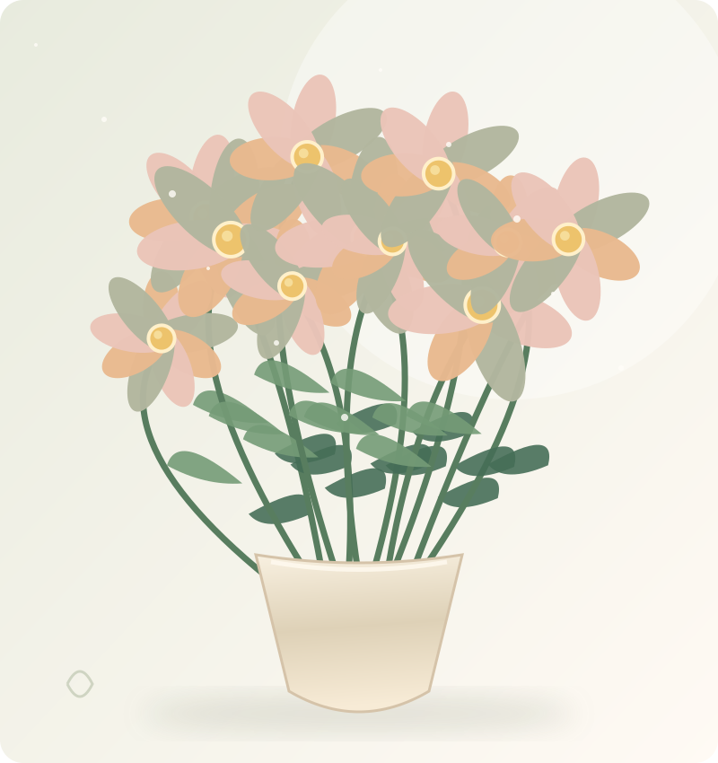

БЕСТСЕЛЛЕРНЕЖНЫЙ / РОМАНТИЧНЫЙ
Тихое утро
01 / 06Лепестки, похожие на первое солнце.
Нежность в каждом лепестке. Собираем вдохновение в букеты, которые хочется дарить — и оставлять себе.

НАШ МАЛЕНЬКИЙ САД
У каждого букета — свой характер. Найди тот, что сегодня откликается именно тебе.

БЕСТСЕЛЛЕРЛепестки, похожие на первое солнце.

Для мыслей, которые хочется сохранить.

НОВИНКАНемного тепла даже в пасмурный день.

Когда хочется замедлиться и помечтать.

Время, когда уют пахнет осенью.

Особенное настроение без особого повода.

flowerНЕ ПРОСТО БУКЕТЫ
FLOREA — вымышленная цветочная студия, созданная как небольшой дизайн-проект. Здесь мы представляем, как выглядело бы место, где замечают простые радости.
Первое утро весны. Цветок на подоконнике. Неожиданный комплимент. Пусть у каждого дня будет свой цвет.
НАШИ ЦЕННОСТИ
У каждой композиции — история, характер и собственное настроение.
Вдохновляем замечать детали и радоваться маленьким моментам.
Ботанические иллюстрации, мягкие цвета и продуманный дизайн.
ЦВЕТЫ ВСЕГДА К МЕСТУ
Сохраните понравившиеся композиции и поделитесь своей цветочной подборкой.